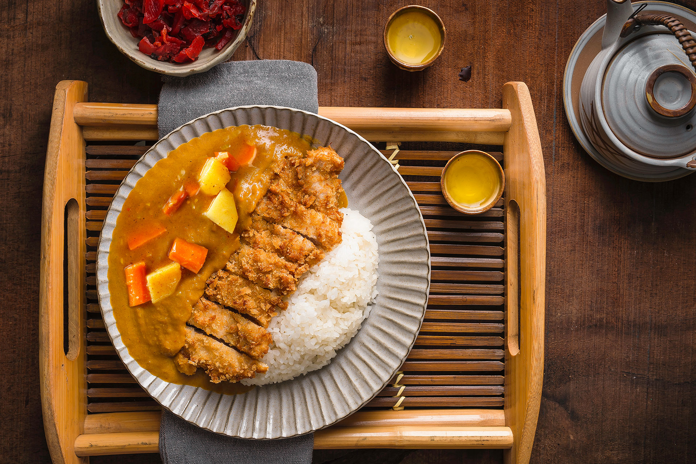

Japanese Curry Recipe

Description
Japanese curry is commonly served in three main forms: curry over rice, curry udon, and curry bread. It is one of the most popular dishes in Japan. The very common "curry rice" is most often referred to simply as "curry" (カレー, karē).
Curry originates in Indian cuisine and was brought to Japan from India by the British. Since the introduction of curry, it was reinvented to suit Japanese tastes and ingredients. Japanese curry has little resemblance to curries from other regions. The dish has changed and been adapted so much since its introduction that it stands on its own as uniquely Japanese. The combination of sweet, sticky Japanese short-grain rice with a thickened curry sauce has led to the unique evolution of Japanese curry. The dish became popular and available for purchase at supermarkets and restaurants in the late 1960s. It is so widely consumed that it can be called a national dish.
- Prep Time: 30 mins
- Cook Time: 1 hr 10 mins
- Total Time: 1 hrs 40 mins
- Servings: 8
Ingredients
- 1 tablespoon vegetable oil, or more as needed
- 1 ¾ pounds beef chuck, cut into 2-inch cubes
- 3 onions, quartered
- 1 tablespoon ketchup
- 1 ½ teaspoons Worcestershire sauce
- 1 pinch cayenne pepper, or to taste (Optional)
- water to cover
- 4 carrots, cut into 2-inch pieces
- 1 cube chicken bouillon (Optional)
- 3 medium potatoes, cut into 3-inch chunks
- 1 ½ (3.5 ounce) containers Japanese curry roux, or more to taste
Steps
- Heat oil in a 6-quart pot over medium-high heat. Add beef and saute until brown, 5 to 7 minutes. Add onions and cook until starting to soften, about 3 minutes. Add ketchup and Worcestershire sauce. Stir to coat. Add cayenne pepper. Pour in water to cover mixture by 1 or 2 inches. Add carrots and bouillon.
- Simmer, skimming fat off the surface of the broth as needed, for 30 minutes. Add potatoes. Stir in 1 package of curry roux and let dissolve; add remaining curry as needed to achieve desired thickness. Continue simmering until beef and vegetables are tender, about 30 minutes more.
Cook's Note
Use any beef stew meat you prefer.
Substitute soy sauce for the Worcestershire if desired.
As with most stews, the longer you simmer the better it will taste. This can also be frozen without the potatoes.
Nutrition Facts
- 360 Calories
- 15g Fat
- 40g Carbs
- 16g Protein